El Sol es el objeto más conocido en el cielo diurno. Los científicos han notado una
sensación de ardor particular y una posible pérdida de visión si se observa durante largos
períodos de tiempo. Esto es especialmente importante a tener en cuenta teniendo en
cuenta el efecto que los objetos brillantes tienen en el Kerbal promedio.